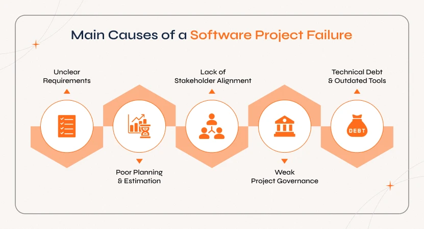
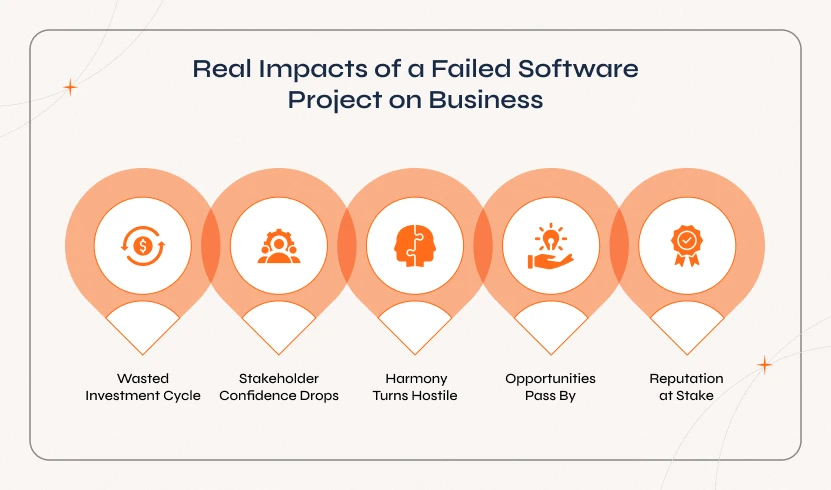
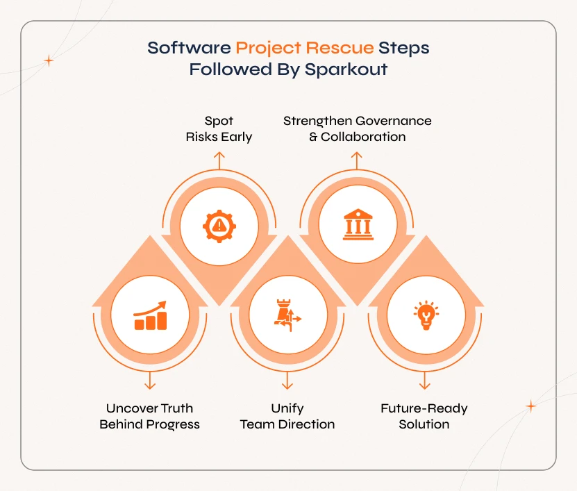
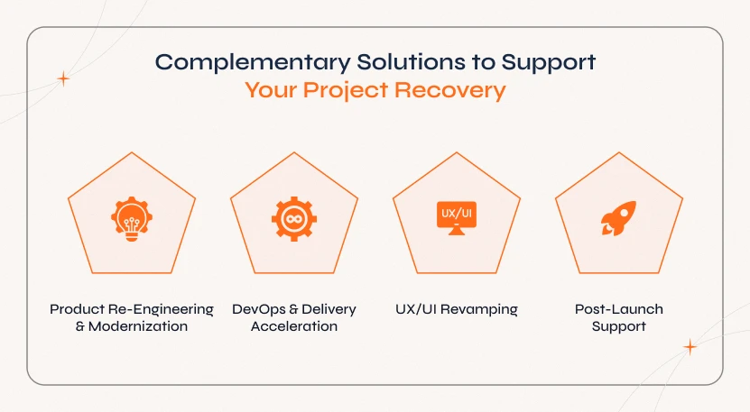

Ever found yourself watching your own custom software development effort slipping through your fingers, leading to missed deadlines and mounting pressure? If so, then you’re not alone. Many organizations, in the starting or middle stage, have come across this red zone. This is where the progress falls, and stakeholders start to lose confidence. However, a failing project doesn’t mean it’s doomed for real. It just needs the right people and strategy to pull them back into the race in the name of software project rescue.
For your understanding, rescuing a failing software project is similar to stabilizing a train that’s in motion. You can’t stop it, but guide it back on track. Once you pinpoint what makes the project fail, you can rebuild momentum with smart and clear ideas.
What is Software Project Rescue?
Software project rescue is actually a process of reviving a failing or struggling project. Like, the ones that are behind schedule, over budget, or not aligning with the business goals. More than just dealing with the bad code, it revolves around identifying where things went wrong and realigning the internal teams accordingly for better outcomes.
To keep things clear and simple, software project rescue is a structured intervention to bring clarity, restore progress and realign teams to achieve better outcomes.
Main Causes of a Software Project Failure
At times, even well-funded and well-intentioned projects can fail for some imbecilic reasons. For business leaders and project managers, acknowledging the actual fact behind this failure can make the difference between recovery and a complete software project reboot. Here are the potential reasons behind a project that loses its direction.

Unclear Requirements
If the technical teams, clients, and project manager aren’t in sync, things might get out of hands. The teams will end up with building the wrong ones. Misunderstanding between stakeholders and developers will often lead to constant changes, project delays, and wasted money. This is exactly why having transparent documentation and requirements early is necessary.
Poor Planning & Estimation
Tight deadlines and optimistic projections might sound great at first, but rarely work out in real time. When teams really underestimate the work or resources needed, they will absolutely end up rushing things. This will affect the quality and increase costs. A good project manager will create realistic plans with time adjustments for faster delivery.
Lack of Stakeholder Alignment
If the technical teams, clients, and project manager aren’t in sync, the project has a high chance of falling behind. Mixed priorities and unclear roles will cause confusion among teams and lead to wasted effort. Continuous check-ins and open communication help everyone stay aligned with business goals.
Weak Project Governance
In the absence of a structured oversight, even a skilled team will fail to keep pace. Weak governance includes unclear roles, inefficient decision-making, and no early warnings for potential risks. Business leaders and PMs must follow clear accountability, risk monitoring, and define escalation paths to keep things under control.
Technical Debt & Outdated Tools
Outdated systems, rushed development, and neglected maintenance will silently drain overall productivity. If the technical debt builds up, each and every change becomes risky and costly. On the contrary, it’s better to invest in modern tools and clean architecture.
Real Impacts of a Failed Software Project on Business
When the software project fails, it hits more than just timelines. It shakes the businesses’ budget, teams, and trust. Before going for a rescue, here’s what business leaders really face before partnering with the rescue agency.

Wasted Investment Cycle
Being a business leader or project manager, there’s nothing more frustrating than witnessing funds vanishing right in front of your eyes with no usable outcome. Constant delays, reworks, and scope changes will consume the estimated budget, while stakeholders keep on demanding progress.
At some point, the process doesn't make any sense, and that’s when businesses start to realize third-party software project recovery help is needed to restore the direction.
Stakeholder Confidence Drops
If the delivery dates keep on slipping and the product demos disappoint, trust between the stakeholders will break into pieces. The teams will start questioning about the leadership, and the clients were forced to lose faith.
At the same time, it’s very difficult to rebuild that confidence internally. This is the situation that forces businesses to hold hands with the project rescue team, who can reach the expectation and rebuild credibility.
Harmony Turns Hostile
Regular misalignment between the business and technical teams will bring stress. Unclear ownership, long waiting hours, and shifting goals will create a toxic environment. At times, even the best-talented employee starts to think that the project is doomed.
In this situation, calling on a rescue team will bring clarity and a fresh idea. This is often what’s needed to reset and boost the team’s energy and purpose.
Opportunities Pass By
In the current fast-moving market, timing is everything. Each and every missed milestone indicates that competitors are moving ahead and reaching your target audience. Due to this, business teams will feel helpless watching weeks and months of planning goes in vain.
These urgencies are what pushes the firms to reach rescue experts who can bring the fallen project back from the dead. This will be a turning point before the opportunity shuts down completely.
Reputation at Stake
For an executive or project manager, a failed launch isn’t just a project loss to them. More likely, it’s personal credibility that took a hit. When things go wrong, the investors and clients often view it as a sign of weak planning. The pressure builds frustration and leads to loss of confidence.
This is where bringing a rescue team becomes essential. The rescue experts are the only ones who can quickly assess the damage and regain control over the project.
When to Consider a Software Project Rescue Consultant
Sometimes, if a project slows down under some conditions, it explicitly shows some signs. These signs show when to bring the rescue consultant before things get hard and goes beyond recovery.
Product Vision Losing Clarity
Without proper communication, teams seem to build different versions of the software project. Due to these, the features don’t match, the UX feels inconsistent, and no one’s sure about what the result is going to be. This is a clear sign of alignment collapse. In this situation, a trusted rescue consultant service like Sparkout helps businesses to realign everyone who is working on the project.
Direction Stuck in Limbo
Whenever the’s a big decision to make among teams, like what features to build or when to launch, it keeps on revolving around a loop. Because no one wants to take full responsibility. It’s actually not a tech issue, but a leadership roadblock. On the contrary, rescue experts fill those gaps and help break the cycle. They set clear decision rules and give leaders the confidence to take leadership.
Vendors Lose Project Control
There’s a chance that your outsourced team keeps overpromising results, changing developers often, or missing deadlines without proper updates. In this situation, you will start losing track of what’s actually happening behind the scenes. Here’s where the rescue consultant becomes essential. They audit the vendor’s work and lead to a successful software project restoration.
Post-Launch Expenses Explode
Even after a successful launch, you can face issues like constant crashes, support issues, or compliance problems. You’ll observe that these issues are eating your operation’s budget. This is a clear warning that the struggle isn’t over yet. A rescue team can step in to bring stability and build a clear plan for long-term maintenance and growth.
Effort Without Alignment
There are times when developers will work non-stop, the project manager putting off fires, and teams are growing impatient. Eventhough, no one can see real progress. This is a clear sign of team misalignment. A software rescue consultant helps businesses to bring order back by setting transparent priorities and re-establishing collaboration.
Why Choose Sparkour for Your Project Rescue Needs
When the current project loses direction, they don’t need additional developers to fix things up. All they need is a partner who understands a businessperson’s point of view and can predict outcomes. At Sparkout, we provide best software project rescue services with a blend of technical expertise and sharp business strategies to resurrect dead projects back to life.
Proven Expertise
Our rescue team has revived projects across different domains, including logistics, SaaS, fintech, and e-commerce. Each with an understanding of the unique failure points. We don’t actually rely on assumptions, instead we use data, proven frameworks, and years of delivery experience to make the recovery quick.
Business-First Approach
We proceed with the rescue operation beyond just fixing code. Each and every action we undertake, whether it’s refining workflows or restructuring the system, the plan is to meet up with your business goals.
Transparent Process
We believe that trust from a business starts with clarity. So, we allow your internal team to monitor our work through dashboards, structured reports, and continuous communication. As a result, there are no hidden costs, no fake promises, only visible progress.
Cross-Functional Rescue Squad
Our immediate project rescue team doesn’t just include developers. They consist of architects, project strategists, UI/UX experts, and DevOps specialists, who work altogether for fixing both the product and the process. Overall, it’s a full-spectrum approach, not a patchwork.
Long-Term Partnership
According to us, the rescue process doesn’t just end at the delivery. We assist with you throughout the post-launch and help with further stabilization, monitoring, and process handover to make sure the rescue team can manage scalability without setbacks.
Software Project Rescue Steps Followed By Sparkout
Whenever a business approaches with struggling projects, Sparkout’s goal isn’t just to fix a broken software project. Moreover, it’s to restore control, clarity, and confidence. Here’s how we approach every software project rescue and recovery.

Uncover Truth Behind Progress
Our rescue process begins with assessing the project’s current health, like budget, team structure, and scope. This kind of unbiased auditing helps businesses to reveal the root cause of the delay and gives a solid starting point.
Spot Risks Early
Our next move is to stop the overflow. We use our advanced team and frameworks to identify high-impact blockers. Whether they are technical issues or management gaps, we pinpoint the precise flaw and fix it ASAP. These quick and visible actions help stabilize the project and do build trust.
Unify Team Direction
We do collaborate with leadership to clearly define what success actually looks like. Right after that, we align every team and task towards the business goals. This removes unnecessary work and helps teams to focus on delivering measurable value.
Strengthen Governance & Collaboration
For us, clear communication and accountability are the heart of complete recovery. We will set up a simple and structured governance model that actually makes the ownership clear, minimizes confusion, and keeps leadership under control. This aids both tech teams and the business in marching to the same goal.
Future-Ready Solution
Once the stability returns, our team helps in shifting the gears towards long-term sustainability. We aid in refactoring fragile components, documenting things up, and upskilling in-house teams. This results in robust, clean, and scalable solutions.
Similarly, if your business faces a sudden software failure, you can initiate the same rescue steps that we follow to make things right.
Complementary Solutions to Support Your Project Recovery
For every rescued project. A right support system is mandatory to sustain progress and to scale confidently. At Sparkout Tech, we offer complementary solutions that strengthen the delivery, optimize performance, and do ensure long-term project growth.

Product Re-Engineering & Modernization
We see many rescued projects suffering from old architecture and outdated technology. Our technical team helps in modernizing the core system, optimizing performance, updating stacks, and gradually increasing scalability. This ensures your product can handle future growth without flaws.
DevOps & Delivery Acceleration
Our Sparkout team will streamline your delivery pipeline with services like DevOps automation, environment strandardization, and CI/CD setup. This actually reduces deployment risks and accelerates launches. This results in giving your team a clear path to track the performance.
UX/UI Revamping
Technical recovery alone isn’t enough to sustain a project for long-term growth. A flawed user experience and user interface will sink the adoption. Our dedicated design team enhances the usability and aligns the product with your customers’ expectations.
Post-Launch Support
Beyond providing successful custom software solutions, we do continue to support your project with proactive maintenance, observability tools, and performance audits. Our main motto is to keep uptime, enhance security, and attain user satisfaction.
End Note
Even if the project is carried out with maximum precision, it does hits turbulence at some point. What actually defies success is how fast a business responds to the occurring failure. With a solid visibility, alignment, and leadership, even a failing software project can be transformed into a success story.
At Sparkout, we step in to restore the momentum. By utilizing modern recovery frameworks, transparent execution, and future-ready practices, we help businesses turn failure into growth and regain trust in their tech investments.